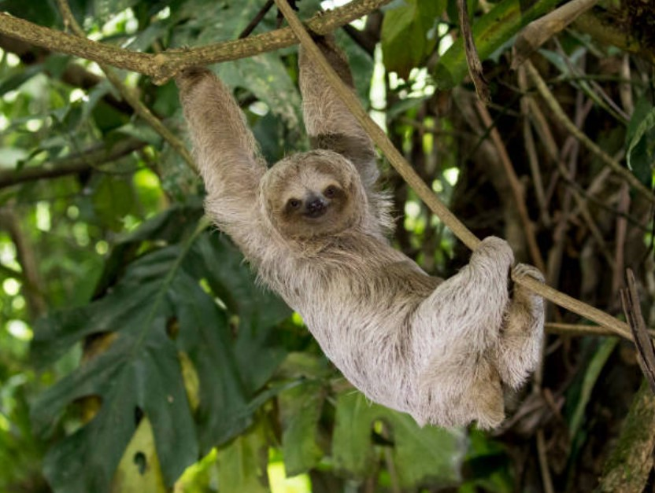

Малко информация
Ленивците са бавноподвижни дървесни бозайници от групата на Непълнозъбите, разпространени в тропичните гори на Централна и Южна Америка. В съвременната класификация на Непълнозъбите (Xenarthra) ленивците се отнасят към разред Pilosa заедно с мравоядите, като се отделят в собствен подразред Folivora или Phyllophaga, и двете означаващи листояди съответно на латински и древногръцки. Съвременните ленивци се делят на две семейства: Трипръсти ленивци (Bradypodidae) и Двупръсти ленивци (Megalonychidae); общо шест вида.

Начин на живот и хранене
Ленивците се придвижват по клоните на дърветата, където те се захващат здраво с огромните си нокти. По цял ден тези абсолютни вегетарианци висят заспали по най-високите клони, където вечер се хранят с листа, цветове и плодове.
